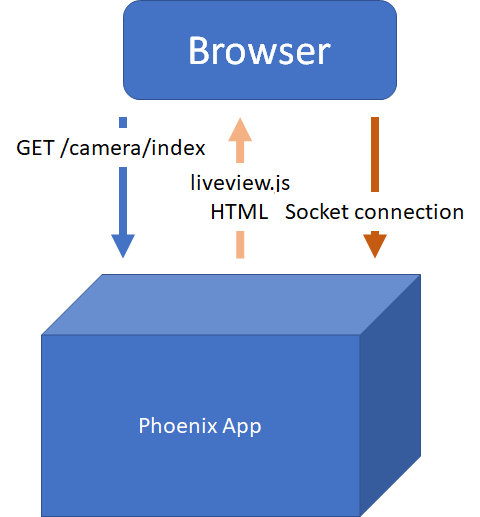
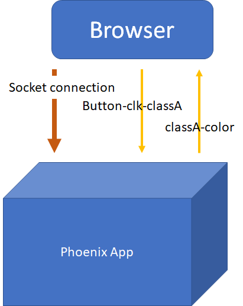
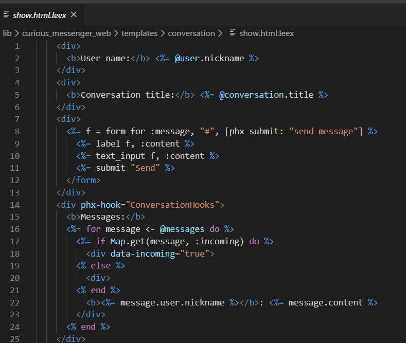

<!doctype html>
<html lang="en">
    <head>
        <meta charset="utf-8">
        <meta name="viewport" content="width=device-width, initial-scale=1.0, maximum-scale=1.0, user-scalable=no">

        <title>Learning Rate Finder</title>
        <link rel="stylesheet" href="./css/reveal.css">
        <link rel="stylesheet" href="./css/theme/moon.css" id="theme">
        <link rel="stylesheet" href="./css/highlight/zenburn.css">
        <link rel="stylesheet" href="./css/print/paper.css" type="text/css" media="print">


    </head>
    <body>

        <div class="reveal">
            <div class="slides"><section  data-markdown><script type="text/template">
## Intro

Scott Mueller

### Knowfalls.com</script></section><section  data-markdown><script type="text/template">## Tampa Elixir

Looking for Presenters

</script></section><section  data-markdown><script type="text/template">## Overview of Phoenix Liveview

* Example Applications
* How Liveview Works
* Code Snippets
* Liveview Limitations
* AI and Liveview
* Sample Application
</script></section><section  data-markdown><script type="text/template">## Example Applications

https://curiosum.dev/blog/elixir-phoenix-liveview-messenger-part-1

https://dev.to/petecorey/animating-a-canvas-with-phoenix-liveview-1m8i

https://liveview-pixelart.herokuapp.com/nashfp

live draw
</script></section><section  data-markdown><script type="text/template">## https://phoenixphrenzy.com/results
</script></section><section  data-markdown><script type="text/template">## Page Load

</script></section><section  data-markdown><script type="text/template">## Messages Over Socket

</script></section><section  data-markdown><script type="text/template">## .leex

</script></section><section  data-markdown><script type="text/template">## Bindings

```html
<button phx-click="inc_temperature">+</button>
```</script></section><section  data-markdown><script type="text/template">## Binding Handler

All via handle_event callback

```elixir
def handle_event("inc_temperature", _value, socket) do
  {:ok, new_temp} = Thermostat.inc_temperature(socket.assigns.id)
  {:noreply, assign(socket, :temperature, new_temp)}
end
```</script></section><section  data-markdown><script type="text/template">## Binding:Attribute

| Binding  | Attribute |
| ------------- | ------------- |
|Params	|phx-value-*|
|Click Events	|phx-click|
|Focus/Blur Events	|phx-blur, phx-focus, phx-target|
|Form Events	|phx-change, phx-submit, data-phx-error-for, phx-disable-with|
</script></section><section  data-markdown><script type="text/template">| Binding  | Attribute |
| ------------- | ------------- |
|Key Events	|phx-keydown, phx-keyup, phx-target|
|Rate Limiting	|phx-debounce, phx-throttle|
|Custom DOM Patching	|phx-update|
|JS Interop	|phx-hook|</script></section><section  data-markdown><script type="text/template">## Liveview Use Cases

* Inputs, buttons forms
  - input validation, dynamic forms, autocomplete

* Page and data navigation
</script></section><section  data-markdown><script type="text/template">## Liveview Limitations

* Needs connection reliability
* Needs low connection latency or can tolerate lag
* Animations handled elsewhere, CSS transitions
</script></section><section  data-markdown><script type="text/template">## Strengths of Liveview

* Display interactions pushed to client
  - Chat, monitoring events, sharing interactively

* AI systems where AI is major actor on system
</script></section><section  data-markdown><script type="text/template">## Example Application

https://github.com/meanderingstream/image_anno
</script></section><section  data-markdown><script type="text/template">
[Knowfalls.com](https://knowfalls.com/)

###### scottmueller@knowfalls.com

Looking for Founder Engineers

Elixir, Functional Programming, Rails, Experience
</script></section><section  data-markdown><script type="text/template"></script></section></div>
        </div>

        <script src="./lib/js/head.min.js"></script>
        <script src="./js/reveal.js"></script>

        <script>
            function extend() {
              var target = {};
              for (var i = 0; i < arguments.length; i++) {
                var source = arguments[i];
                for (var key in source) {
                  if (source.hasOwnProperty(key)) {
                    target[key] = source[key];
                  }
                }
              }
              return target;
            }

            // Optional libraries used to extend on reveal.js
            var deps = [
              { src: './lib/js/classList.js', condition: function() { return !document.body.classList; } },
              { src: './plugin/markdown/marked.js', condition: function() { return !!document.querySelector('[data-markdown]'); } },
              { src: './plugin/markdown/markdown.js', condition: function() { return !!document.querySelector('[data-markdown]'); } },
              { src: './plugin/highlight/highlight.js', async: true, callback: function() { hljs.initHighlightingOnLoad(); } },
              { src: './plugin/zoom-js/zoom.js', async: true },
              { src: './plugin/notes/notes.js', async: true },
              { src: './plugin/math/math.js', async: true }
            ];

            // default options to init reveal.js
            var defaultOptions = {
              controls: true,
              progress: true,
              history: true,
              center: true,
              transition: 'default', // none/fade/slide/convex/concave/zoom
              dependencies: deps
            };

            // options from URL query string
            var queryOptions = Reveal.getQueryHash() || {};

            var options = {"transition":"fade"};
            options = extend(defaultOptions, options, queryOptions);
        </script>


        <script>
          Reveal.initialize(options);
        </script>
    </body>
</html>
